Naissance de l'éducation populaire
1880 → 1936. Instruire le peuple, protéger l'enfant, émanciper l'ouvrier.
Six étapes de voyage
Une République qui doit s'enraciner
Après 1870, les républicains veulent former des citoyens instruits, loyaux et laïques. Éduquer devient un projet politique.
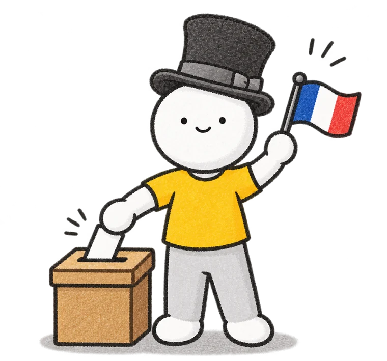
D'abord, travailler
de travail par jour, courant vers 1880
âge minimum en usine (loi de 1892)
de repos par semaine, obligatoire en 1906
journée légale de travail en 1919
Loisirs populaires : café, bal, fête foraine. Les vacances ? Réservées aux riches.
Taudis, tuberculose : l'hygiène devient une obsession.
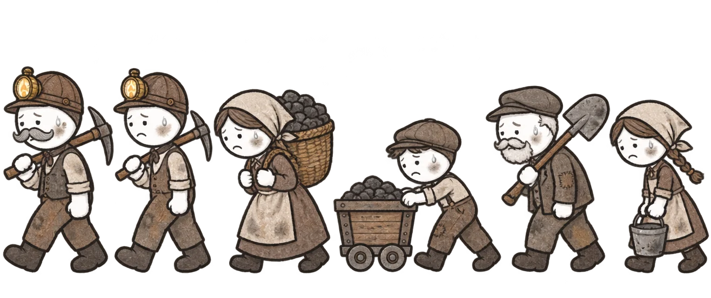
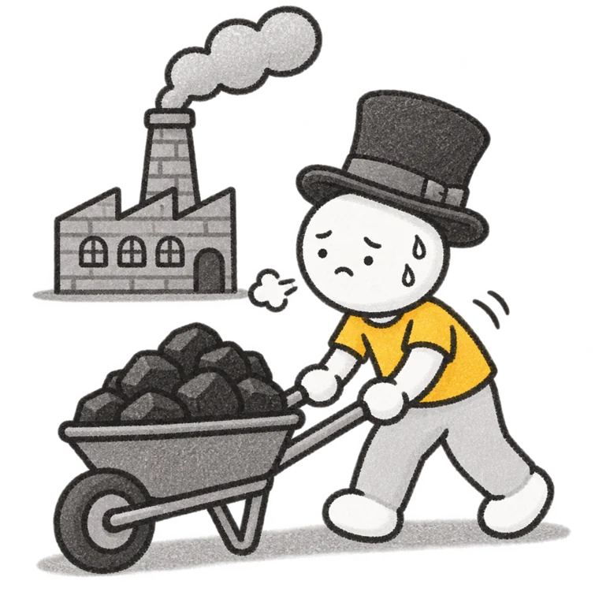
Une société qui bascule
Révolution industrielle, grande dépression (1873-1896), puis crise de 1929 : l'économie pèse sur les familles ouvrières.
Tensions grèves réprimées (Fourmies, 1891) · laïcs contre catholiques · esprit de revanche
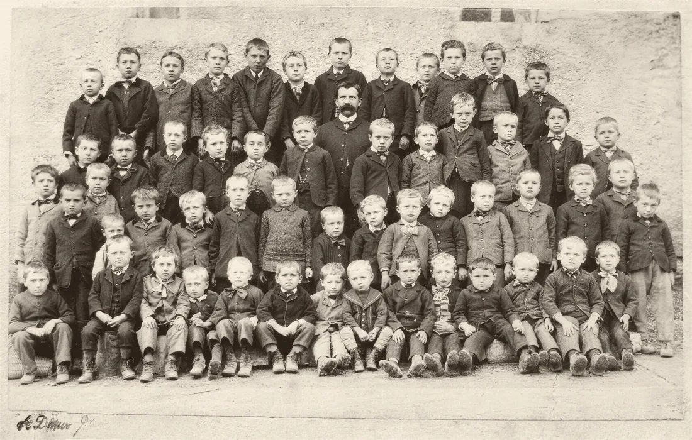
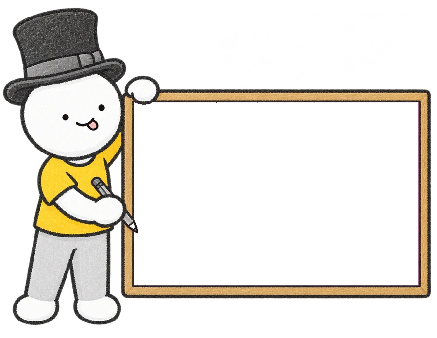
ARCHIVEIndustrialisation
Exode rural, quartiers ouvriers surpeuplés.
Instruction
L'école obligatoire alphabétise une génération entière.
Laïcisation
République et Église se disputent l'éducation des jeunes.
Mouvement ouvrier
Syndicats, coopératives, bourses du travail.
Cinq lois qui ouvrent la voie
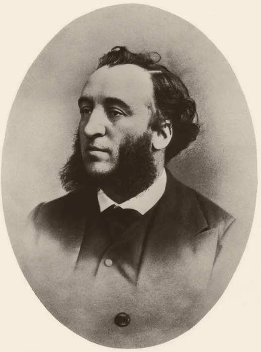
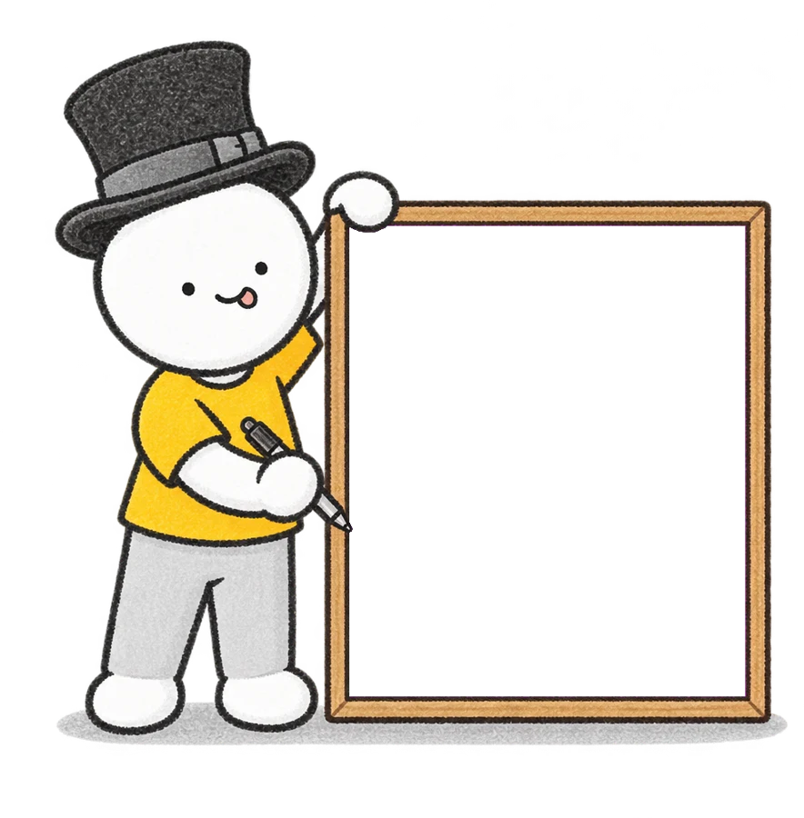
1881Lois Ferry
École gratuite, obligatoire, laïque.
Syndicats
Loi Waldeck-Rousseau.
Associations
Liberté d'association.
Séparation
Églises et État séparés.
Journée de 8 h
Le travail recule.
L'État instruit, les associations animent
L'État
École publique, formation des instituteurs (les futurs « hussards noirs »), encourage les « œuvres périscolaires ».
Les communes
Caisses des écoles, locaux, financement des premières colonies.
Les associations
Ligue de l'enseignement (Jean Macé, 1866), œuvres catholiques, mouvement ouvrier : elles créent et gèrent tout.
Quatre façons d'éduquer
Éducation populaire laïque
CondorcetJean MacéInstruire le peuple toute la vie.
Courant confessionnel
Sillon 1894JOC 1927Éducation morale et religieuse.
Scoutisme
Baden-Powell 1907Nature, petits groupes, responsabilité.
Éducation nouvelle
MontessoriFreinetL'enfant apprend en faisant.
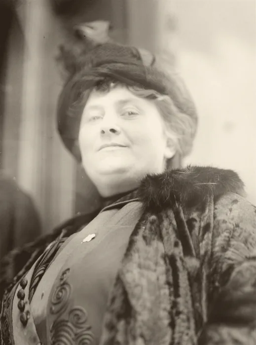
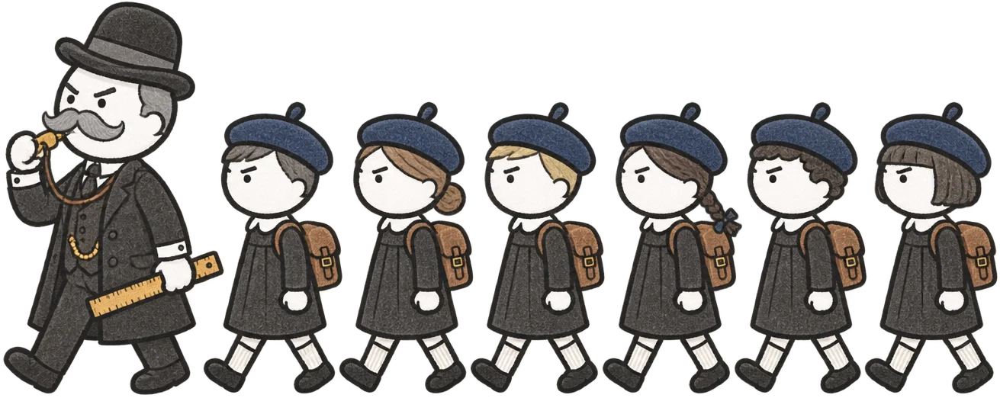
Enfant, jeune, adulte : quel regard ?
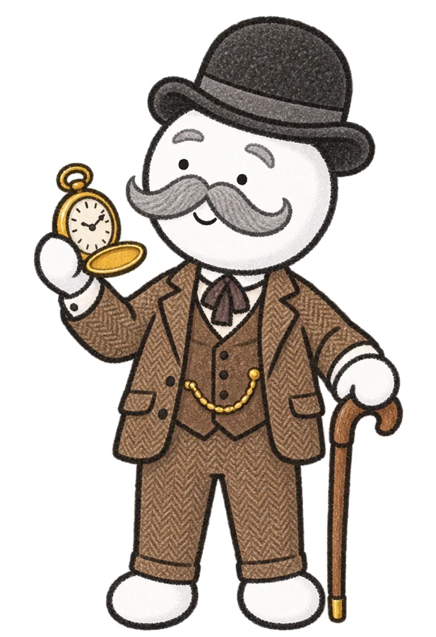
L'enfant
À instruire, moraliser et protéger. Peu à peu, une personne avec ses propres besoins.
Le jeune
Futur citoyen et futur soldat, à encadrer : bataillons scolaires (1882-1892).
L'adulte
L'ouvrier peut s'émanciper par le savoir : cours du soir, conférences.
Quatre mots à maîtriser
Éducation
Former toute la personne : corps, esprit, morale.
Apprentissage
Acquérir un savoir ou un savoir-faire.
Pédagogie
La méthode pour faire apprendre.
Action éducative
Une intervention organisée, avec un public et des objectifs.
Patronages & colonies
Les patronages
Jeux, gym, théâtre, chorale. D'abord catholiques, puis laïques.
Les colonies
1881 : pasteur Lorriaux. 1883 : Edmond Cottinet à Paris.
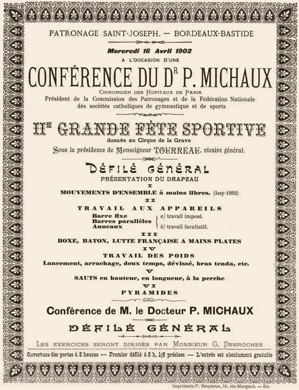
Apprendre hors de l'école
Bourses du travail
Syndicats : bibliothèques, cours.
Universités populaires
Cours du soir pour les ouvriers.
Scoutisme
Éclaireurs de France, puis Scouts de France.
Auberges de jeunesse
Bierville (Marc Sangnier), CLAJ 1933.
Une colonie vers 1900
Public
Enfants « chétifs » des écoles ouvrières. 1883 : 18 Parisiens pour la 1re colonie Cottinet.
Objectifs
Santé, hygiène, discipline. Pesée au départ et au retour.
Organisation
~3 semaines l'été, encadrés par des instituteurs. Discipline stricte : rangs, silence, horaires fixes.
JOURNÉE TYPE (RECONSTITUTION)
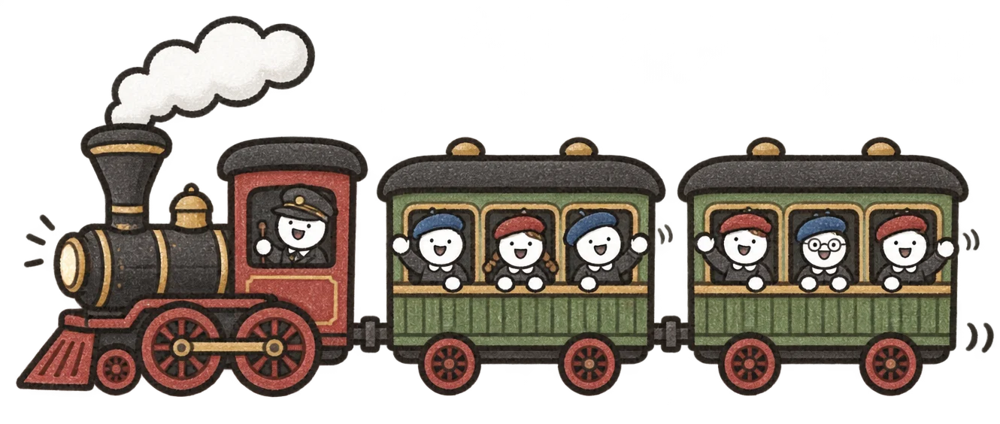
En 50 ans, l'animation trouve ses lieux, ses lois et ses idées
Ce qui reste
Colonies → séjours de vacances
Patronages → accueils de loisirs
Loi 1901 → statut associatif
Éducation nouvelle → pédagogie active
1936, la bascule
Front populaire, congés payés, Léo Lagrange aux Sports et Loisirs.
Nos sources
Une histoire de l'éducation populaire, J.-M. Mignon, La Découverte, 2007
Histoire des colonies de vacances de 1880 à nos jours, L. L. Downs, Perrin, 2009
L'éducation populaire : histoires et pouvoirs, G. Poujol, Éd. ouvrières, 1981
INJEP · injep.fr — Ligue de l'enseignement · laligue.org
Légifrance (loi du 1er juillet 1901) — Gallica BnF — Munaé, Rouen
Images d'archives : Wikimedia Commons, domaine public (J. Ferry par Nadar ; photo de classe v. 1890 ; affiche du patronage Saint-Joseph, 1902 ; M. Montessori v. 1913). Illustrations : mascotte PlayAd, générées par IA.